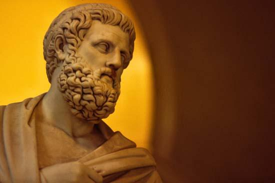

Oedipus Rex
by Kristofer Sano January 25, 2018
Greece, one of the cradles of civilization, fostered the maestro Sophocles who in turn shaped the way tragedy and irony was made through the ages. One of his work that really stood out not only from other great works of his time but also throughout history was Oedipus Rex or also known as Oedipus the King. It has never before seen and thought of to be the most tragic tragedy, and ironic irony of all time.
Never before had dramatic irony been portrayed best as the story of Oedipus, and now, it is the framework of following ironies and tragedies after its birth. The story started out with what seemed to be a normal scenario, with a noble protagonist. Then came a drastic problem, the drought, that required a drastic solution. However, the solution is another problem to solve. And as the story unravels, the answer has not been what Oedipus had in mind. He himself. Not only that but also with a realization of who he is, and what he became. That he became his father's killer and his mother's wife. Nowadays, many literary artworks, albeit with differing storylines, follow the same flow of first having relatable actor(s) or actress(es), then with a storyline progression slowly showing glimpses of a grim truth, then finally showing the ugly end.
Oedipus Rex's entire story is an irony: The name of Oedipus, meaning "the one who saw" was not able to see the truth of his past; his quest as a nobleman in persecuting the murderer of Laius, ended up with him persecuting his own self; having his own mother as his own wife; and calling the blind prophet Teresias blind but only he saw the reality Oedipus is living in.
In addition, what makes the Oedipus Rex exemplary is that it conveys meaning and values through its irony. Such as Oedipus's unknowingly living a lie, continued his pursuit of truth. No matter what other people insist, and how terrible the truth is for him and to the people close to him. 
Sophocles: Maestro of the Oedipus Rex (Mastin, 2009).
Who is Sophocles?
Sophocles is the playwright of famous literary artworks such as Ajax, Antigone, Oedipus Rex, Oedipus at Colonus, and Electra. A tragedian who pioneered the use of a third actor in a play, reducing the role of the chorus. He innovated the way plays were created in such a way to have a more interesting storyline and effect to the audience.
References:
Freeman, C. (1999). The Greek Achievement: The Foundation of the Western World.
New York: Viking Press. ISBN 0-670-88515-0
Mastin, L. (2009). Oedipus the King. Retrieved from Classical Literature: http://www.ancient-literature.com/greece_sophocles_oedipus_king.html
Sophocles (429 B.C.). Oedipus Rex.